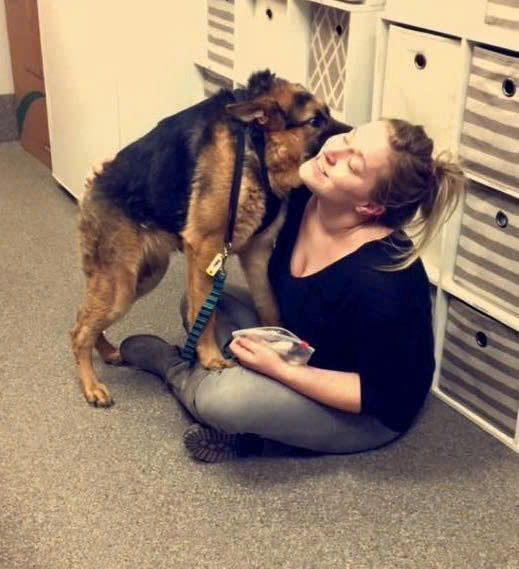

Thân hình khác thường của chú chó xấu nhất thế giới
Quasi Modo với thân hình ngắn khác thường
Chú chó Quasimodo, cái tên được đặt vui theo nhân vật chính của tác phẩm "thằng gù ở nhà thờ Đức Bà nổi tiếng" mắc phải chứng bệnh lạ khiến cột sống của nó bị rút ngắn, bề ngoài trông dị dạng chẳng khác nhân vật Quasimodo là bao. Trên thế giới ghi nhận được chỉ có 13 trường hợp chó bị mắc chứng bệnh này mà thôi. Thế có nghĩa là Quasimodo của chúng ta cũng đặc biệt đấy chứ!
Thân là một chú chó giống German Shepherd thuần chủng, hay người ta còn gọi là Béc-giê, nhưng Quasimodo lại không được yêu quý nhiều như những đồng loại của nó, cũng vì bề ngoài chẳng đẹp đẽ mà thôi. Tuy nhiên, hội chứng xương sống ngắn này chỉ gây ra khó khăn duy nhất tới hoạt động thường ngày của Quasimodo là quay cổ không được, còn lại nó vẫn là một chú chó năng động tinh nghịch và vô cùng tình cảm.
Người ta tìm thấy Quasimodo khi nó vẫn còn là một chú chó bị bỏ hoang tại Minnesota. Khi mới nhận chú chó về, các nhân viên ở trạm cứu hộ chó Secondhand Hounds tại Eden Prairie còn tưởng rằng Quasimodo bị người ta ngược đãi, bắt phải sống trong thùng phuy nên mới có bề ngoài dị dạng như vậy. Cuối cùng sau khi chẩn đoán, kết quả Quasimodo mắc chứng xương sống ngắn.

Chú chó béc-giê Quasimodo.

Bề ngoài xấu xí thế thôi, nhưng Quasimodo lại vô cùng tình cảm.
Hội chứng xương sống ngắn khiến cho các đốt xương sống của Quasimodo bị ngắn lại, một số bị dính liền vào nhau, tổng thể cột sống cũng bị rút ngắn toàn bộ, và kết quả là chẳng còn cổ cho Quasimodo nữa. Nhìn đầu của chú chó này thì có vẻ bình thường, thế nhưng phần xương vai của nó đang phải chịu tải lực khá lớn, bởi không có phần xương sống cổ đỡ cho nữa. Các bác sỹ thú y cũng bó tay với trường hợp này, chỉ có thể hy vọng Quasimodo có thể vui sống mà thôi.
Sara Anderson, nhân viên tại trạm cứu hộ Secondhand Hounds cho biết, tuy cơ thể bị biến dạng nhưng Quasimodo cực tình cảm, rất quấn người, thích nhất là được nhảy vào lòng người nằm. Cũng bởi sự thiệt thòi của nó, trạm cứu hộ đã lập ra fanpage "Quasi the Great" trên Facebook để ghi lại kỷ niệm hành trình sống của cậu bé, mục đích nữa là để tìm một gia đình yêu thương Quasimodo. Đến nay Fanpage đã thu hút được kha khá người yêu thích, lên đến con số gần 47 nghìn like.
Người hùng của chúng ta được khá nhiều người yêu thích và khâm phục
Trong trạng thái cập nhật được đăng tải vào ngày 31/01 vừa qua, Secondhand Hounds đã chia sẻ thêm thông tin về tình trạng sức khỏe của Quasi – chú chó nhỏ đầy nghị lực mà nhiều người đang dõi theo. Theo đó, Quasi cần phải trải qua một ca phẫu thuật quan trọng nhằm khắc phục dị tật đuôi xoắn bẩm sinh, tình trạng đã và đang gây ảnh hưởng không nhỏ đến khả năng di chuyển cũng như sinh hoạt hằng ngày của em.
Ca phẫu thuật này được xem là bước đầu tiên nhưng vô cùng cần thiết trên hành trình hồi phục của Quasi. Sau phẫu thuật, chú chó nhỏ sẽ tiếp tục trải qua thêm một số đợt điều trị và theo dõi y tế để đảm bảo cơ thể hồi phục ổn định, các chức năng vận động dần cải thiện và không phát sinh biến chứng. Đây là một quá trình cần nhiều thời gian, sự kiên nhẫn và chăm sóc cẩn thận từ đội ngũ cứu hộ cũng như các bác sĩ thú y.
Secondhand Hounds cho biết, chỉ khi hoàn tất các giai đoạn điều trị và Quasi thực sự khỏe mạnh, sẵn sàng cả về thể chất lẫn tinh thần, em mới có thể bước sang một chương mới của cuộc đời mình – chuyển đến một mái ấm yêu thương, nơi có bố mẹ mới sẵn sàng đồng hành, che chở và yêu thương em trọn vẹn. Hành trình phía trước của Quasi vẫn còn nhiều thử thách, nhưng với sự chung tay từ cộng đồng và niềm tin vào một tương lai tốt đẹp, chú chó nhỏ đang từng ngày tiến gần hơn đến cuộc sống hạnh phúc mà em xứng đáng có được.